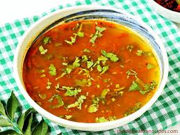

🍲 Rasam Recipe

Ingredients
- 1/2 cup toor dal
- 1 medium tomato, chopped
- 1 tbsp tamarind pulp
- 1 tsp rasam powder
- 1/4 tsp turmeric powder
- 1/2 tsp mustard seeds
- 1/4 tsp asafoetida (hing)
- 8-10 curry leaves
- 2 garlic cloves, crushed
- 2 dry red chilies
- Fresh coriander for garnish
- Salt to taste
- 1 tsp ghee or oil
Instructions
- Pressure cook the toor dal until soft and mash well.
- In a pot, add chopped tomatoes, tamarind pulp, turmeric, rasam powder, and salt with 2 cups of water. Boil until tomatoes soften.
- Add mashed dal and adjust consistency with water. Simmer for 5–10 minutes.
- For tempering: Heat ghee, add mustard seeds, dry red chilies, garlic, curry leaves, and asafoetida. Sauté briefly.
- Pour the tempering into the rasam and mix.
- Garnish with coriander and serve hot.
Serve With
- Steamed rice
- Papad
- South Indian thali
🌿 Tip: For added flavor, use homemade rasam powder and crushed pepper.